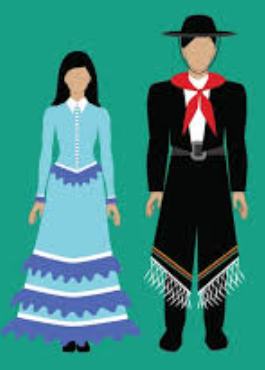

| Home | Food | Culture | Festivals | Famous Personalities | Images | Spanish Version | Contact us |
Argentina is a country that strongly values diversity and solidarity. The most followed religion in Argentina is Christianity. The country is also home to a large Jewish community. Some of the other religions present in Argentina also include Islam, Judaism, Buddhism and Hinduism.
People in Argentina wear modern and traditional clothing. People who live near the countryside usually wear traditional clothing also known as ‘Gaucho’ costumes. Tango one of Argentina’s traditional dances is not only famous in Argentina but also all across the world. Tango started in the late 1880s and is influenced by the African and European rhythms. This pair dance is a beautiful and entertaining sight but very difficult to perform.

Spanish is the official language of Argentina and is spoken by almost every single Argentinian person. Some of the other languages spoken include Italian, German and other European languages.